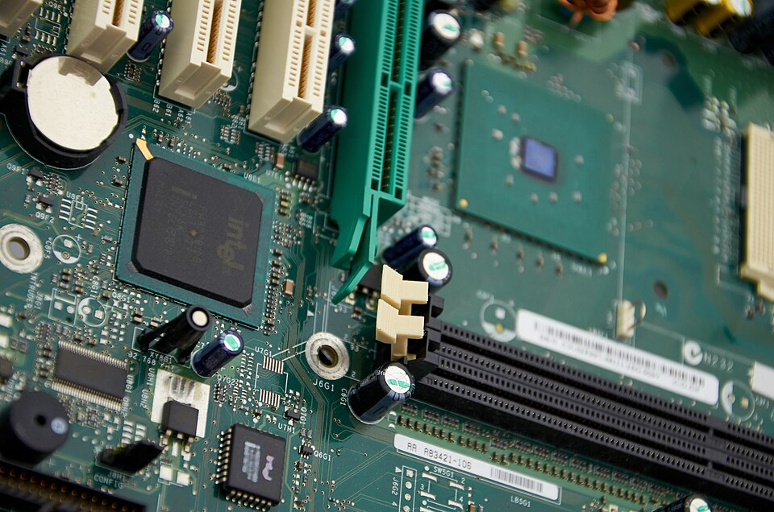

AI MONTHLY DIGEST
Understand AI.
Month by month.
Models, tools and the people behind them. Ten AI highlights in each issue, with sources to explore further.
Open October issue ↗October 2026 · 10 slides
AI MONTHLY DIGESTOCT / 2026

THE OCTOBER ISSUEArtificial intelligence.
Fresh perspectives.
Fresh perspectives.
Computing hardware · illustrative photograph
Lenharth Systems / Wikimedia Commons · CC0 1.0
10 highlights per issue
10 issues in the archive
EN/DE Choose your language
Read. Understand. Explore.INSIDE THIS ISSUE
This month at a glance.
Selected stories through October 28, 2026. The month is still in progress.
YOUR AI ARCHIVE
Browse the monthly archive.
Ten issues from January to October 2026. Ten slides each, with sources and image credits.
Based on the original project by Niksa Visic.